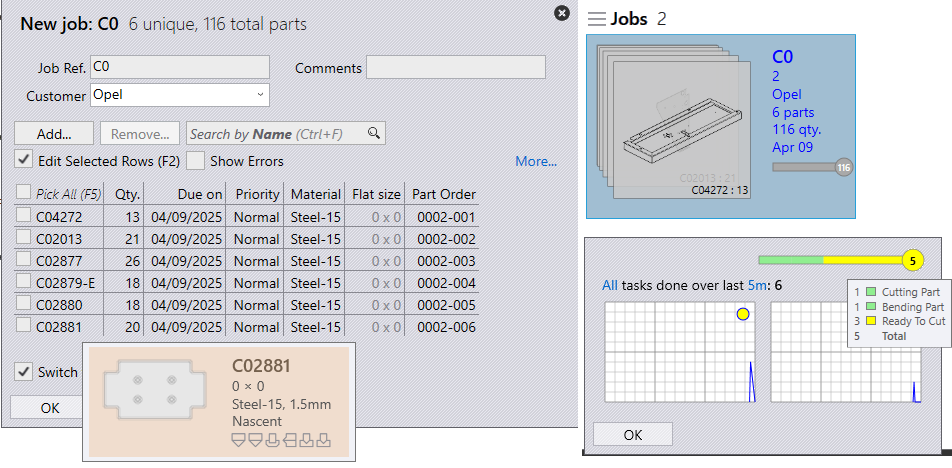

导入/导出
从csv或xlsx导入
您还可以导入常见文本格式的套料
-
单击*文件→打开→导入套料*，将显示打开文件夹对话框。选择`C:\Program Files\Metamation\Praxis\Samples\Jobs\C0\C0.csv`。单击确定。[Samples\Jobs Folder csv格式已映射为默认值。]

-
如果所有零件都存在于csv位置或查找文件夹目录中，则会通过列出与csv字段匹配的所有零件来显示“新建套料”窗口。
-
缺少的零件将被忽略，并且不会出现在“新建套料”窗口中。
-
最初零件状态为新生。

-
单击确定，零件现在导入到零件库中。CAD验证，完成折弯和切割加工实例，可以在Pmonitor屏幕中进行监控。

为缺失的 CAD 文件创建落料零件
-
工厂→设置→套料，在电子表格导入设置下。选中*“为丢失的CAD文件创建毛坯”*
-
如果缺少零件，则在新套料窗口中以黄色突出显示。
-
在套料中，缺少零件将具有csv映射字段，但零件状态为新生，即创建毛坯。


第3步：使用csv或xlsx监视文件夹
-
出厂→设置→监视。
-
选中：启用“实时文件夹”并监视子文件夹
-
指定监视文件夹UNC文件夹路径或映射驱动器文件夹路径。
-
电子表格导入设置：选中 从“实时文件夹”导入电子表格
-
从电子表格导入选项中，选择*导入套料*
-
-
单独复制`C:\Program Files\Metamation\Praxis\Samples\Jobs\C0\C0.csv`并粘贴到监视文件夹中。

-
由于缺少CAD文件，未创建套料